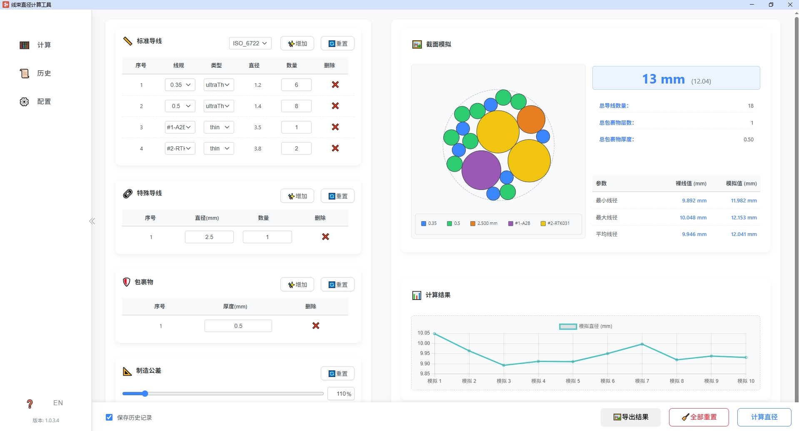

1. 如何启动插件
安装插件后，在你的浏览器工具栏中找到 "线束直径计算工具" 的图标 (通常是一个图案图标)，点击它。插件的主界面会以一个新的弹出式窗口打开。
这是插件的图标
2. 主界面概览
插件主界面分为左右两部分：左侧是 侧边栏导航，右侧是 主内容区。
这是一个示意图，展示了侧边栏和主内容区的布局
侧边栏
侧边栏提供了主要的导航功能：
- 🧮 计算: 点击进入核心的线束直径计算页面。这是插件的主要功能模块。
- 📜 历史: 点击查看你过往的计算历史记录。
- ⚙️ 配置: 点击进入插件的配置页面。
- 版本信息: 在侧边栏底部会显示当前插件的版本号，例如
版本: 1.0.2.2。点击版本号可以查看详细的更新日志。 - 收起/展开按钮 (
<或>): 位于侧边栏和主内容区之间，点击可以收起或展开侧边栏，以便为内容区提供更多空间。
主内容区
主内容区会根据你在侧边栏选择的选项动态显示不同的内容。默认情况下，打开插件后会显示 "计算" 页面的内容。
3. 核心功能：线束直径计算 (计算 页面)
"计算" 页面是你进行所有线束直径参数输入、执行计算并查看结果的地方。
界面布局概览
计算页面主要分为三个区域：
- 左侧参数输入区: 用于定义线束的组成部分，如导线规格、数量，包裹物厚度等，以及设置计算相关的参数。
- 右侧结果展示区: 用于可视化展示计算后的线束截面模拟图、详细的直径数据和统计图表。
- 底部操作控制栏: 包含执行计算、重置页面和保存历史记录的选项。
左侧：参数输入区
在这里，你需要输入构成线束的所有组件信息和计算参数。
📏 标准导线
此区域用于添加和管理符合预设规格的导线。
表格列说明:
- 序号: 自动编号。
- 线径: 从下拉列表中选择导线的标称截面积 (例如 0.35, 0.5, 0.75 mm² 等)。
- 类型: 根据选择的线径，从下拉列表中选择导线的绝缘层类型 (例如 Thin-薄壁, Thick-厚壁, UltraThin-超薄壁)。
- 直径(mm): 根据你选择的"线径"和"类型"，此字段会自动填充该规格导线的标称外径。
- 数量: 输入这种规格的导线在线束中的数量。
- 删除: 点击 "❌" 按钮可以删除该行导线。
操作按钮:
- ✨ 增加: 点击增加一行新的标准导线输入。
- 🔄 重置: 点击将标准导线表格恢复到默认的初始状态（通常是几行预设的常用规格，数量为0）。
如何使用:
- 点击"✨ 增加"按钮添加导线行。
- 在每一行中，从"线径"下拉框选择合适的线径。
- 接着，从"类型"下拉框选择对应的绝缘层类型，"直径(mm)"会自动更新。
- 在"数量"列输入该规格导线的根数。
- 如果添加错误或不再需要某行，点击该行末尾的"删除"按钮。
🔗 特殊导线
如果你的线束中包含没有在"标准导线"列表中预设规格的导线，可以在这里添加。
表格列说明:
- 序号: 自动编号。
- 直径(mm): 直接输入这种特殊导线的外径（包含绝缘层）。
- 数量: 输入这种特殊导线的数量。
- 删除: 点击 "❌" 按钮可以删除该行导线。
操作按钮:
- ✨ 增加: 点击增加一行新的特殊导线输入。
- 🔄 重置: 点击清空所有特殊导线输入。
如何使用:
- 点击"✨ 增加"按钮添加导线行。
- 在"直径(mm)"列输入导线的实际外径。
- 在"数量"列输入该导线的根数。
🛡️ 包裹物
此区域用于定义线束外部的包裹层，例如胶带、套管等。包裹物会增加线束的最终直径。
表格列说明:
- 序号: 自动编号，代表包裹的层数顺序（从内到外）。
- 厚度(mm): 输入这一层包裹物的单边厚度。
- 删除: 点击 "❌" 按钮可以删除该行包裹物。
操作按钮:
- ✨ 增加: 点击增加一层新的包裹物输入。
- 🔄 重置: 点击清空所有包裹物输入。
如何使用:
- 如果线束有多层包裹，从最内层开始，逐层点击"✨ 增加"按钮添加。
- 在每一行的"厚度(mm)"列输入该层包裹的厚度。
📐 制造公差
考虑到实际生产中的各种因素，线束的实际直径通常会比理论计算值稍大。这里可以设置一个放大系数。
滑块与输入框:
你可以通过拖动滑块或直接在输入框中输入百分比来调整制造公差。
- 范围是 100% 到 200%。例如，输入 110% 表示最终计算直径会在理论值（含包裹物）的基础上再放大 10%。
- 默认值为 110%。
操作按钮:
- 🔄 重置: 点击将制造公差恢复到默认值 (110%)。
🧮 计算次数
本工具使用蒙特卡洛模拟方法来估算线束直径，这意味着它会进行多次随机的导线堆叠模拟，然后取统计结果。
滑块与输入框:
你可以通过拖动滑块或直接在输入框中输入次数来调整模拟计算的运行次数。
- 范围是 1 到 100 次。次数越多，结果可能越接近真实情况的平均值，但计算时间也会相应增加。
- 默认值为 10 次。
操作按钮:
- 🔄 重置: 点击将计算次数恢复到默认值 (10)。
底部：操作控制栏
- 保存历史记录 (复选框):
默认勾选。当勾选时，每次点击"📏 计算直径"后，当前的输入参数和计算结果会自动保存到"历史"页面中，方便日后查阅。
如果不想自动保存，可以取消勾选。
- 🧹 全部重置 (按钮):
点击此按钮会将整个"计算"页面上的所有输入项（标准导线、特殊导线、包裹物、制造公差、计算次数）恢复到它们的初始默认状态。
- 📏 计算直径 (按钮):
这是最重要的操作按钮。当你完成了所有参数的输入后，点击此按钮，插件会开始执行线束直径的模拟计算。
计算完成后，结果会显示在页面的右侧结果展示区。
你也可以直接按键盘上的
Enter键来触发计算。
右侧：结果展示区
当你点击"📏 计算直径"按钮后，计算结果会在这里显示。
🖼️ 截面模拟图
- Canvas 画布: 这里会展示一个基于你输入的导线进行随机堆叠后的典型线束横截面示意图。不同直径的导线会用不同颜色表示。
- 图例 (Legend): 画布旁边或下方会有一个图例，说明截面图中不同颜色分别对应哪种直径的导线。
- 内层容器边界: 图中可能会有一条虚线圆圈，它代表了所有导线（不含包裹物和公差）堆叠后形成的理论线束边界。
✨ 高亮最终平均直径
在截面模拟图区域，会有一个醒目显示的数值，例如 "Ø 12.3 mm"。
这代表了最终的平均直径，它是综合考虑了所有导线、所有包裹层厚度以及你设定的制造公差后，向上取整得到的估算直径值。括号内通常会显示一个更精确（如保留两位小数）的计算值。
⚙️ 输入统计
这里汇总了你当前输入的一些关键参数：
- 总导线数量: 你在"标准导线"和"特殊导线"中输入的导线总根数。
- 总包裹物层数: 你在"包裹物"区域输入的包裹层总数。
- 总包裹物厚度: 所有包裹层厚度的总和（单边）。
📈 直径计算详情
这是一个表格，展示了更详细的直径计算结果：
参数:
- 最小线径: 多次模拟中得到的最小线束直径。
- 最大线径: 多次模拟中得到的最大线束直径。
- 平均线径: 多次模拟结果的平均线束直径。
裸线值 (mm):
这一列显示的是仅基于导线本身（不包含任何包裹物和制造公差）进行多次堆叠模拟后得到的理论直径的最小值、最大值和平均值。
模拟值 (mm):
这一列显示的是最终的计算直径，它是在"裸线值"的基础上，加上了所有包裹层的总厚度（双边），并且应用了你设定的"制造公差"百分比后得到的直径。这些值通常是你更关心的最终结果。
📊 计算结果分布图
这是一个直方图，显示了在多次模拟计算中，不同直径结果出现的频次分布。
- 横坐标 (X轴): 线束直径 (mm)。
- 纵坐标 (Y轴): 频次 (出现的次数)。
- 这可以帮助你直观地了解计算结果的稳定性和集中趋势。如果分布很宽，说明结果波动较大。
快速计算示例
假设你需要计算一个由以下组件构成的线束：
- 10根 0.5 mm² 的薄壁导线
- 5根 1.5 mm² 的厚壁导线
- 2根外径为 2.8 mm 的特殊导线
- 用一层厚度为 0.13 mm 的胶带包裹
- 制造公差按 112% 计算
- 进行 20 次模拟计算
操作步骤如下：
- 在标准导线区，增加两行。第一行选择线径
0.5，类型Thin，数量输入10。第二行选择线径1.5，类型Thick，数量输入5。 - 在特殊导线区，增加一行。直径输入
2.8，数量输入2。 - 在包裹物区，增加一行。厚度输入
0.13。 - 在制造公差区，将滑块或输入框的值调整为
112%。 - 在计算次数区，将滑块或输入框的值调整为
20。 - 确保保存历史记录复选框已勾选。
- 点击底部的 📏 计算直径 按钮。
- 稍等片刻，右侧就会显示出详细的计算结果和截面模拟图。
4. 查看与管理计算历史 (历史 页面)
每次当你在"计算"页面启用了"保存历史记录"并执行计算后，该次计算的完整快照都会被保存在这里。
主要功能:
- 历史记录列表:
每条记录都包含计算的时间戳、最终估算直径以及一个简要的输入参数总结。
- 操作按钮:
- 🔍 详情: 点击可以查看该条历史记录的完整输入参数和计算结果，与当时在"计算"页面右侧看到的结果完全一致。
- 🔄 加载到计算页: 点击此按钮，会将该条历史记录的所有输入参数（包括导线、包裹物、公差等）完整地加载回"计算"页面，方便你基于过去的计算进行微调和重新计算。
- ❌ 删除: 点击删除该条历史记录。
- 🗑️ 全部删除: 位于历史列表的顶部，点击可以一次性清空所有的历史记录。
5. 插件配置 (配置 页面)
在这里，你可以自定义插件的行为和参数，以更好地适应你的工作流程。
主要配置项:
- 标准导线规格管理:
这是配置页面的核心。你可以查看、修改、增加或删除预设的"标准导线"规格。
- 你可以调整现有规格的标称外径，或者为某个线径增加新的绝缘层类型（例如，"FLR-B" 类型）。
- 通过"增加"和"删除"按钮来管理整个规格列表。
- 点击"恢复默认设置"可以将导线规格表重置为插件初始安装时的状态。
- 默认计算参数:
你可以修改"计算"页面打开时的默认值，例如：
- 默认的制造公差百分比。
- 默认的模拟计算次数。
- 数据管理:
- 导出配置: 将你当前的所有配置（包括自定义的导线规格和默认参数）导出一个
.json文件。 - 导入配置: 通过选择之前导出的
.json文件，可以快速恢复或在不同设备间同步你的配置。 - 重置所有设置为默认值: 这是一个最终的重置选项，它会将插件的所有设置（包括导线规格、默认参数和所有历史记录）全部恢复到初始状态。请谨慎操作！
- 导出配置: 将你当前的所有配置（包括自定义的导线规格和默认参数）导出一个
6. 查看版本与更新日志
在主界面侧边栏的底部，你会看到当前插件的版本号，例如 版本: 1.0.2.2。
点击这个版本号，会弹出一个窗口，显示详细的更新日志 (Changelog)。这可以帮助你了解每个版本新增了哪些功能或修复了哪些问题。